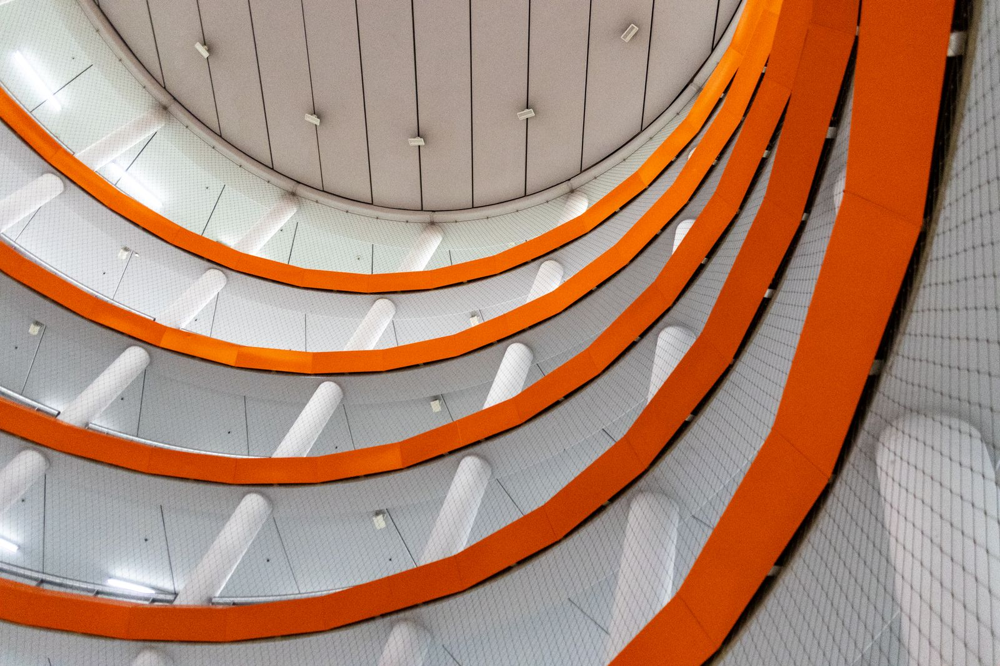

01
KNOWLEDGE SYSTEM / 2026
Atlas
让碎片信息沉淀为可检索、可关联、可再次行动的个人知识系统。
- React
- Node.js
- SQLite
SELECTED WORK 2024—2026
三个持续演进的实验，覆盖知识、连接与实时数据。
KNOWLEDGE SYSTEM / 2026
让碎片信息沉淀为可检索、可关联、可再次行动的个人知识系统。
NETWORK TOOL / 2025
一套面向个人服务的轻量入口，处理反向代理、证书、健康检查与部署。

LIVE DATA / 2024
将分散的运行数据压缩成一眼可读的状态，让异常更早被看见。
ABOUT / CXG 构建者，而非旁观者
我关注产品与工程交叉的区域：既思考用户为什么需要它，也把每一个接口、状态和部署路径落实到可运行的系统。
工作方式偏向快速原型、短反馈循环和清晰交付。能独立完成从信息架构、交互界面到服务端与上线维护的完整链路。
WORKING MODE FROM 0 TO 1
先确认真正要改变的结果，而不是急着堆功能。
用可交互原型收敛结构、内容与关键路径。
把体验、性能、安全与部署一起纳入实现。
OPEN CHANNEL 下一件值得做的事
产品原型、个人工具、内部系统，或任何值得被认真构建的数字体验。
hello@cxg.bot.cd